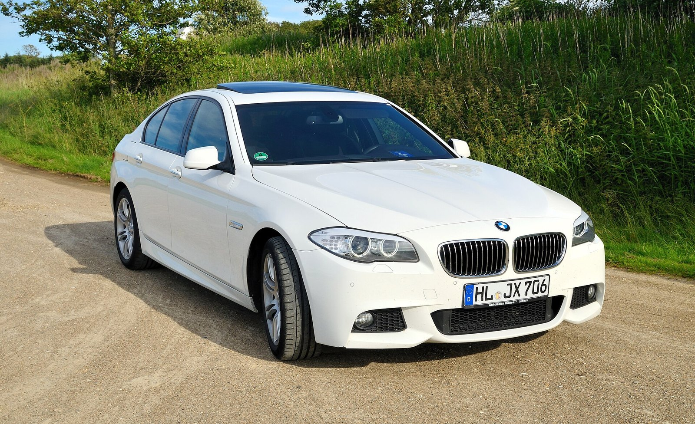

520d
Когда дорога — каждый день.
Сильная сторона — дизельный момент и экономичность на длинных маршрутах. Для коротких городских поездок особенно важны состояние системы выхлопа и история обслуживания.
Рассмотреть силовую частьBMW 5 серии F10 выпускали в Дингольфинге, Германия. Дизайн — мюнхенская школа BMW.
Происхождение модели, не адрес владельца сайта.06 / Модификации
Одна платформа / Три характера
Экономичный дизель, динамичная турбочетвёрка или рядная шестёрка. Сравним не впечатления из объявлений, а три версии в одинаковой спецификации.

528i
Бензиновая турбочетвёрка с широким диапазоном крутящего момента. В этом срезе 528i — двухлитровый, а не ранняя трёхлитровая версия.
Фото: Wladyslaw Sojka · Free Art License 1.3 ↗. Снимок иллюстрирует семейство F10, а не оснащение всех версий таблицы.
Европейские седаны без xDrive, с 8-ступенчатой АКПП, спецификация с июля 2013. Данные BMW, стандартные шины 225/55 R17. Не смешиваем с ранними версиями, механической коробкой или другими рынками.
Сравнение без догадок
Переключатель выше выделяет столбец выбранной версии. Все три остаются рядом, чтобы сравнение не превращалось в поиск по вкладкам.
| Параметр / Единицы | 520dДизель | 528iБензин | 535iБензин |
|---|---|---|---|
| Рабочий объём | 1 995 см³ | 1 997 см³ | 2 979 см³ |
| Цилиндры | 4 / В ряд | 4 / В ряд | 6 / В ряд |
| Мощность | 184 л.с.135 кВт / 4 000 об/мин | 245 л.с.180 кВт / 5 000–6 500 об/мин | 306 л.с.225 кВт / 5 800–6 000 об/мин |
| Максимальный момент | 380 Н·м1 750–2 750 об/мин | 350 Н·м1 250–4 800 об/мин | 400 Н·м1 200–5 000 об/мин |
| Разгон 0–100 км/ч | 7,9 с | 6,3 с | 5,7 с |
| Максимальная скорость | 231 км/ч | 250 км/ч | 250 км/ч |
| Комбинированный расход EU | 4,5 л/100 км | 6,1 л/100 км | 7,2 л/100 км |
| Коробка в этом сравнении | 8-ступ. АКПП Steptronic | 8-ступ. АКПП Steptronic | 8-ступ. АКПП Steptronic |
| Привод | Задний | Задний | Задний |
| Стандартные шины | 225/55 R17 | 225/55 R17 | 225/55 R17 |
| Официальный технический лист | BMW PDF ↗ | BMW PDF ↗ | BMW PDF ↗ |
В технических листах цифры в скобках относятся к автоматической трансмиссии. Здесь выбраны именно они. Мощность выражена в метрических лошадиных силах PS, а не американских hp.
Комбинированный расход приведён по официальному циклу EU на стандартных шинах. С большими колёсами значения меняются; фактический расход зависит от дороги, температуры и стиля езды.
Не рейтинг / Ориентир
Лучшая модификация — не обязательно самая мощная. Важно, где и сколько вы ездите и насколько готовы вкладываться в состояние машины.
520d
Сильная сторона — дизельный момент и экономичность на длинных маршрутах. Для коротких городских поездок особенно важны состояние системы выхлопа и история обслуживания.
Рассмотреть силовую часть528i
245 л.с. и бензиновый характер без перехода к шестицилиндровой версии. Не выбирайте только по обозначению: в разные годы под именем 528i встречались разные моторы.
Рассмотреть силовую часть535i
Рядная шестёрка и запас тяги во всём рабочем диапазоне. Паспортная динамика впечатляет, но состояние двигателя, охлаждения и трансмиссии важнее красивой цифры в объявлении.
Рассмотреть силовую частьОдин официальный срез позволяет сравнить версии без смешения годов и трансмиссий. BMW Group, 26 июня 2013, «Specifications of the BMW 5 Series Sedan, valid from July 2013». Данные двигателя — страница 1, коробки, динамики и расхода — страница 2. Коды двигателя в выбранных листах не указаны и здесь не выдуманы.